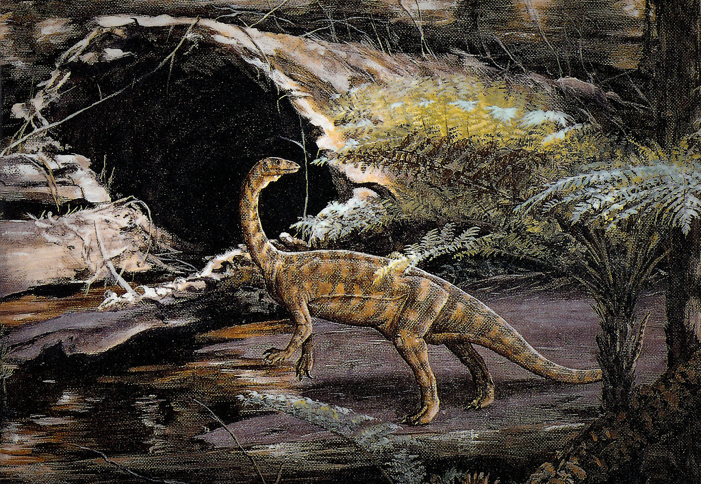
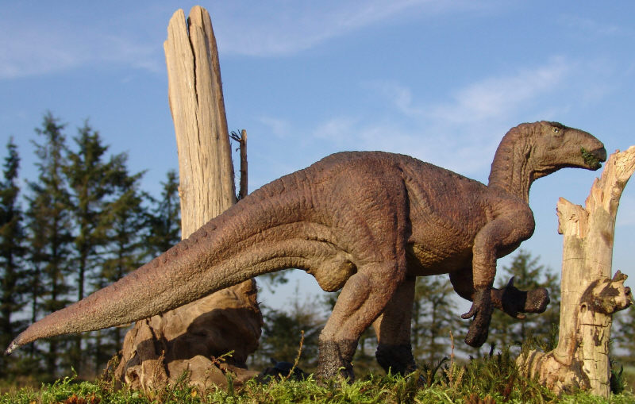

Homepage When Dinosaurs Were Born First Dinosaurs
How Dinosaurs Lived Dinosaurs Go Extinct
A Quick Quiz

The first dinasaur found in North America was an early sauropod called the Anchisaurus found near Manchester, Connecticut,USA.

The iguanadon is 10 meters long. The iguanadon used to look rather like a rhinoceros in its model in the gardens of the Crystal Palace, London.